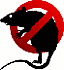
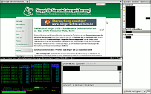

Ratpoison
Dieser Artikel wurde für die folgenden Ubuntu-Versionen getestet:
Ubuntu 14.04 Trusty Tahr
Zum Verständnis dieses Artikels sind folgende Seiten hilfreich:

Ratpoison  ist ein sehr einfach gehaltener Tiling-Fenstermanager. Wie der Name schon sagt, ist er Gift für die Maus – die Bedienung erfolgt ausschließlich mit der Tastatur. Für einzelne Fenster steht aber jederzeit die Maus bereit. Ratpoison zeichnet sich dadurch aus, dass es viele Konfigurationsmöglichkeiten bietet. Selbstverständlich unterstützt es auch mehrere Arbeitsflächen.
ist ein sehr einfach gehaltener Tiling-Fenstermanager. Wie der Name schon sagt, ist er Gift für die Maus – die Bedienung erfolgt ausschließlich mit der Tastatur. Für einzelne Fenster steht aber jederzeit die Maus bereit. Ratpoison zeichnet sich dadurch aus, dass es viele Konfigurationsmöglichkeiten bietet. Selbstverständlich unterstützt es auch mehrere Arbeitsflächen.
Installation¶
Es muss nur ein Paket aus den offiziellen Paketquellen installiert [1] werden:
ratpoison (universe)
 mit apturl
mit apturl
Paketliste zum Kopieren:
sudo apt-get install ratpoison
sudo aptitude install ratpoison
Start¶
|  |
| Ratpoison mit Tiling |
Möchte man Ratpoison als neue Sitzung im Displaymanager eintragen, sollte die Konfigurationsdatei /usr/share/xsessions/ratpoison.desktop in etwa so aussehen:
[Desktop Entry] Name=Ratpoison Comment=starts Ratpoison Comment[de]=Startet Ratpoison Exec=ratpoison Icon= Type=Application
Danach kann man im Displaymanager die Sitzung "Ratpoison" auswählen und so den Fenstermanager starten. Alternativ kann man Ratpoison auch über eine virtuelle Konsole starten. Dazu muss man folgenden Befehl ausführen:
startx /usr/bin/ratpoison -- :1
Die XServer-Sitzungen werden von 0 an durchnummeriert. Ratpoison wird also auf XServer 2, welcher die Tastenkombination
Strg +
Alt +
F8 hat, gestartet.
Hinweis:
Der oben genannte Befehl bezieht sich auf ein Linux-System ohne grafische Anmeldung und sollte nicht in einem Terminal innerhalb einer grafischen Oberfläche ausgeführt werden.
Benutzung¶
Tastenkürzel¶
Mit der Tastenkombination Strg + T gelangt man in den Befehlsmodus. Dort kann man dann unter anderem folgende Befehle an Ratpoison übergeben:
| Tastenkürzel | Wirkung |
| ? | Ein Hilfe-Fenster öffnet sich. |
| ⇧ + 1 | Oben-rechts öffnet sich ein kleines Eingabefeld, über das man Programme per Shell-Befehl ausführen kann. |
| . | Ein Menü, mit dem man Programme starten kann, öffnet sich. |
| ⇧ + . | Oben-rechts öffnet sich ein kleines Eingabefeld, über das man Befehle an Ratpoison übergeben kann. |
| C | Eine Shell wird geöffnet. |
| U | Die letzte Aktion wird rückgängig gemacht. |
| K | Das Fenster wird beendet. |
| ⇧ + K | Das Fenster wird zum Schließen gezwungen. (Nötig, wenn ein Fenster hängen bleibt.) |
| S | Teilt den aktuellen Rahmen vertikal in der Mitte. |
| ⇧ + S | Teilt den aktuellen Rahmen horizontal in der Mitte. |
| Tab ⇆ , N | Wechselt zum nächsten Fenster. |
| P | Wechselt zum vorigen Fenster. |
| R | Man gelangt in einen Modus, in dem man die Größe des aktuellen Rahmens mit den Pfeiltasten oder mit den vi-Richtungstasten (h,j,k,l) ändern kann. |
| ⇧ + R | Verschiebt das aktuelle Fenster in den Hintergrund und vergrößert die verbleibenden entsprechend. |
| ⇧ + Q | Verschiebt alle Fenster außer dem aktuellen in den Hintergrund und vergrößert dieses aus die gesamte Desktopfläche. |
| ↑ , ↓ , → , ← | Wechselt zu dem Fenster, welches in der entsprechenden Richtung liegt. |
| ⏎ | Man wechselt zu dem Fenster, welches im Hintergrund geöffnet ist. |
| A | Zeigt oben-rechts die Zeit und das Datum an. |
| W | Zeigt die Namen der Fenster an. |
Da manche häufig verwendeten Tastenkombinationen denkbar ungünstig liegen, sollte man sich am besten (wenn es störend ist) seine eigene Konfiguration erstellen, oder eine schon vorgefertigte Konfigurationsdatei  übernehmen.
übernehmen.
Befehle¶
Befehle können entweder während der Benutzung von Ratpoison über Strg + T + ⇧ + . übergeben werden (um etwas während der Laufzeit zu verändern), oder in die Konfigurationsdatei ~/.ratpoisonrc eingetragen werden (um Änderungen für jeden Start zu konfigurieren). Eine vollständige und sehr brauchbare Auflistung findet man in den Manpages zu Ratpoison.
| Befehl | Wirkung |
quit | Ratpoison beenden |
help | Die Hilfe wird geöffnet. |
startup_message off | Deaktiviert die Startnachricht. |
time | Zeigt die Uhrzeit und das Datum an. |
set [ratpoison-variable] [wert] | Setzt den [wert] für die [ratpoison-variable]. Ohne den Parameter [wert], wird der aktuelle Wert der [ratpoison-variable] ausgegeben. Ganz ohne Parameter, werden die Werte aller Variablen ausgegeben. |
describekey [keymap] | Zeigt die Funktion der Taste an, welche nach Absetzen des Befehls in der bestimmten [keymap] gedrückt wird. |
bind [tastenkombi] [befehl] | Nach Strg + T wird mit der [tastenkombi] der [befehl] ausgeführt. |
bind [tastenkombi] exec [anwendung] | Nach Strg + T wird mit der [tastenkombi] die [anwendung] gestartet. |
definekey top [tastenkombi] [befehl] | Mit [tastenkombi] wird der [befehl] ausgeführt. |
escape [tastenkombi] | Ersetzt die Escape-Tastenkombination (Default: Strg + T ) durch [tastenkombi]. |
unbind [tastenkombi] | [tastenkombi] aufheben. |
split bzw. vsplit | Teilt den aktuellen Rahmen in zwei vertikale Hälften. |
vsplit x | Teilt den Rahmen, wobei das zuvor angezeigte Fenster x Pixel von oben oder (bei negativem x) -x Pixel von unten einnimmt. |
vsplit x/y | Teilt den Rahmen vertikal, indem x von y Teilen dem zuvor angezeigte Fenster zugeteilt werden. |
hsplit | Teilt den Rahmen horizontal. Bei Parametern gilt das gleiche, wie bei vsplit. |
focus | Wechselt in den nächsten Rahmen. |
focusup,focusdown,focusleft,focusright | Wechselt den Rahmen in die angegebene Richtung. (hoch/runter/links/rechts) |
shrink | Bringt das Fenster in die eigentliche Größe. |
dedicate [0/1] | (1) Setzt fest, dass keine weiteren Fenster in diesem Rahmen geöffnet werden. (0) Macht den Befehl rückgängig. |
banish | Verbannt den Mauszeiger in die rechte untere Ecke. Dort gehört er in Ratpoison hin  |
Erläuterungen¶
[befehl] ist ein Ratpoisonbefehl, wie er in der obigen Tabelle aufgelistet ist (z.B quit oder help).
[anwendung] ist der Startbefehl einer beliebigen Anwendung (z.B pidgin oder firefox).
[tastenkombi] ist eine beliebig wählbare Taste oder Tastenkombination. Diese werden so dargestellt:
a ist A
M-d ist Alt + D
C-r ist Strg + R
Um den Code von Sondertasten herauszufinden, benutzt man am besten den describekey-Befehl. (siehe Tabelle)
[keymap] -> Keymaps
[ratpoison-variable] -> Variablen
Internet¶
Da bei Ubuntu in der Regel der NetworkManager benutzt wird, um eine Internet-Verbindung zu konfigurieren, wird hier kurz beschrieben, wie man unter Ratpoison am besten ins Netz gelangt. Drei (zwei grafische) Möglichkeiten stehen zur Auswahl:
Über den NetworkManager:
nm-connection-editor
Dort kann man nur Verbindungen eintragen, sich jedoch nicht direkt mit einem Netzwerk verbinden. Um dies zu tun, muss man das Applet starten, welches jedoch nur im Hintergrund läuft, da das Panel zur Darstellung fehlt:
nm-applet
Über Wicd, indem man statt des Applets das Fenster öffnet mit dem Befehl:
wicd-client -n
Über wpa supplicant
Konfiguration¶
Ratpoison wird über die Datei ~/.ratpoisonrc konfiguriert. Die Einträge in dieser entsprechen den Befehlen. Wenn sie noch nicht existiert, muss man die Datei selbst anlegen [2]. Eine sehr brauchbare Konfigurationsdatei findet man hier .
Variablen¶
Mit Variablen kann man das Aussehen und Verhalten von Ratpoison ändern. Man arbeitet mit ihnen über den Set-Befehl.
| Variable | Wirkung |
fgcolor | Ändert die Vordergrundfarbe der Ratpoison-Fenster. |
bgcolor | Ändert die Hintergrundfarbe der Ratpoison-Fenster. |
innputwidth [pixel] | Setzt die Länge des Ratpoison-Textfeldes (welches immer rechts-oben erscheint) auf [pixel]. |
border [pixel] | Setzt den Fensterrahmen aller Fenster auf [pixel]. |
font [schrift] | Setzt die Schrift von Ratpoison auf [schrift]. |
maxundos [anzahl] | Setzt die maximale Anzahl der Schritte, welche Ratpoison durch Strg + T + U zurück gehen kann, auf [anzahl]. |
Keymaps¶
Keymaps kann man als die Menüs der Tastatur bezeichnen. So hat man nach bestimmten, frei wählbaren Tasten(kombinationen) die Möglichkeit, ein bestimmtes Element (Start von Anwendungen, Shutdownoptionen, Audioplayer) mit der gesamten Tastatur zu steuern. Dies muss man jedoch selbst konfigurieren.
Es gibt in der Standardkonfiguration von Ratpoison zwei verschiedene Keymaps:
top: Sie ist ein Sonderfall, da zu ihr alle Tasten gehören, welchen bei der "normalen" Benutzung von Ratpoison Befehle zugewiesen sind (Arbeitsfläche wechseln wie in "Mehrere Arbeitsflächen erstellen").
root: Zu ihr gehören alle Tasten(kombinationen), welchen nach betätigen von Strg + T Befehle zugewiesen sind (alle Tastenkürzel).
Erstellen einer Keymap¶
Folgender Eintrag in der ~/.ratpoisonrc ist nötig, um eine neue Keymap zu erzeugen und ihr einen Befehl zuzuweisen:
# Erstellt die neue Keymap namens "meinekeymap" newkmap meinekeymap # Weist "meinekeymap" die Tastenkombination Strg+k zu definekey top C-k readkey meinekeymap # Weist "meinekeymap" den Eintrag mit der Taste f zu, welcher Firefox startet definekey meinekeymap f exec firefox
Nachdem man dies in seine ~/.ratpoisonrc kopiert hat, kann man durch Strg + K + F Firefox starten.
Beispiele¶
Keymap eines "Herunterfahren-Menüs":
#Keymap shutdown newkmap shutdown definekey top C-s readkey shutdown #herunterfahren definekey shutdown h exec gksu halt #neustarten definekey shutdown r exec gksu reboot #standby definekey shutdown s exec gksu /etc/acpi/sleep.sh #abmelden definekey shutdown a quit
Bei dieser Variante wird immer noch nach dem Root-Passwort gefragt. Wenn man das nicht will, muss man einen entsprechenden Eintrag in die Datei /etc/sudoers machen.
Keymap einer moc-Steuerung:
#moc Keymap newkmap moc definekey top C-m readkey moc #Wechsel zwischen play und pause definekey moc p exec mocp -G #Nächster Titel in der playlist definekey moc j exec mocp -f #Voriger Titel in der playlist definekey moc f exec mocp -r #Play (wenn Stopp ist) definekey moc P exec mocp -p #Zeigt den Künstler und den Titel in einer Ratpoison-Nachricht an definekey moc i exec ratpoison -c "echo `mocp -Q %artist%title`"
Mehrere Arbeitsflächen erstellen¶
Ratpoison besitzt von Haus aus nur eine Arbeitsfläche, jedoch kann man ohne Probleme weitere erstellen. Dazu bearbeitet man die Datei ~/.ratpoisonrc folgendermaßen. Um mehrere Arbeitsflächen zu erstellen, ist dieser Eintrag nötig:
exec /usr/bin/rpws init 4 -k
In diesem Fall werden vier Arbeitsflächen erstellt und man kann mit
Alt +
F1 bis
Alt +
F4 zwischen ihnen wechseln. Wenn man die einzelnen Arbeitsflächen mit anderen Tastenkombination belegen will, lässt man einfach die Option -k weg und definiert sie dann so:
definekey top TASTENKÜRZEL exec rpws 3
In diesem Fall wird TASTENKÜRZEL zu der Arbeitsfläche Nr. 3 erstellt.
Um nun auch noch mit einer Tastenkombination die Fenster zwischen den Arbeitsflächen zu verschieben, ist dieser Eintrag nötig:
Für die erste Arbeitsfläche:
definekey top [tastenkombi] exec ratpoison -c "gmove default" -c "select -" -c "next"
Für alle weiteren Arbeitsflächen:
definekey top [tastenkombi] exec ratpoison -c "gmove wspl2" -c "select -" -c "next"
(wobei in diesem Fall das Fenster zur Arbeitsfläche Nr. 2 verschoben wird (
gmove wspl2)).
Hinweis:
Wenn man die Fenster verschiebt, muss man sie dann auf der Zielarbeitsfläche erst mit Strg + T + ⏎ in den Vordergrund holen.
Wenn man will, dass man mit dem Verschieben auch zu der jeweiligen Arbeitsfläche wechselt, hängt man einfach
;rpws [arbeitsfläche nr.];ratpoison -c "next"
an alle Verschiebe-Befehle. Das sieht dann z.B. so aus, wenn man das Fenster auf die Arbeitsfläche Nr. 1 verschiebt:
definekey top [tastenkombi] exec ratpoison -c "gmove default" -c "select -" -c "next";rpws 1;ratpoison -c "next"
Hintergrundbild¶
Von sich aus unterstützt Ratpoison keine Hintergrundbilder, jedoch kann man eines beispielsweise über Feh einstellen.
feh --bg-center [pfad-zum-bild]/[bild]
Dieser Befehl gilt nur für eine Session. Wenn man dauerhaft ein Hintergrundbild einstellen will so trägt man dies in die Datei ~/.ratpoisonrc ein:
exec feh --bg-center [pfad-zum-bild]/[bild]
Skripte¶
Wenn man in Ratpoison "auf Knopfdruck" eine bestimmte Rahmenkonstilation und in dieser bestimmte Programme haben will, dann sind Skripte ein guter Weg, dies zu realisieren. Man speichert sie am besten in dem Ordner ~/.ratpoison/ ab, welchen man in der Regel neu erstellen muss. Das folgende ist z.B. ein Skript, welches auf einer Arbeitsfläche vier Terminals öffnet und dann das erste (links-oben) fokusiert:
1 2 3 4 5 6 7 8 9 10 11 12 13 14 15 16 | #!/bin/bash ratpoison -c split xterm & sleep 1 ratpoison -c hsplit ratpoison -c focusright xterm & sleep 1 ratpoison -c focusdown ratpoison -c hsplit xterm & sleep 1 ratpoison -c focusright xterm & sleep 1 ratpoison -c focus |
Über den Befehl ratpoison -c kann man Befehle an Ratpoison übergeben. Sonst ist es ein "normales" Bash-Skript. Zu beachten ist, dass man nach "xterm" immer die folgenden Ratpoison-Befehle über "sleep [sekunden-die-das-programm-zum-starten-braucht]" verzögern muss, damit das Terminal auch in dem aktuellen Rahmen geöffnet wird.
Nachdem man dieses Skript z.B. unter 4terms.sh gespeichert und über chmod ausührbar gemacht hat, kann man einen Eintrag in der ~/.ratpoisonrc machen, um das Skript über eine Tastenkombination starten zu können. [4] Dieser könnte dann so aussehen:
bind T exec ~/.ratpoison/./4terms.sh
Nun werden über Strg + T + ⇧ + T vier gleich große Terminals auf der aktuellen Arbeitsfläche gestartet. Man sollte diese Tastenkombination am besten auf einer leeren Arbeitsfläche ausführen.
Hier noch ein Skript, welches Pidgin startet, an den linken Rand verschiebt und die Rahmen so konfiguriert, dass bei Doppelklick auf einen "Buddy" das Chatfenster in dem rechten Teil der Arbeitsfläche geöffnet wird.
1 2 3 4 5 6 | #!/bin/bash pidgin & sleep 5 ratpoison -c dedicate ratpoison -c "hsplit 1/5" ratpoison -c focusright |
Problembehebung¶
Menü¶
Wenn einzelne Einträge im Menü (
Strg +
T +
. ) nicht funktionieren, liegt das daran, dass Ratpoison versucht, die Programme mit dem Befehl x-terminal-emulator aufzurufen. Dieser ruft jedoch (unter GNOME) das gnome-terminal auf, welches unter Ratpoison nicht startet. Es gibt es zwei verschiedene Möglichkeiten, dieses Problem zu beheben:
Lösung Nr. 1¶
Mit dem Befehl:
sudo update-alternatives --config x-terminal-emulator
kann man auswählen, welches Terminal man bei dem "x-terminal-emulator" verwenden will. Dort wählt man zum Beispiel xterm aus (dies auch sonst der Standard bei Ratpoison).
Lösung Nr. 2¶
Diese Lösung ist nur nötig, wenn die Lösung 1 in Konflikt mit anderen Desktopumgebungen gerät, weil sie auch den Befehl "x-terminal-emulator" verwenden und in diesem Fall "xterm" unerwünscht ist.
Man passt die Dateien im Verzeichnis /var/lib/ratpoison/menu wie in folgendem Beispiel an: [2][3]
In der Datei debian.Games.Action.menu finden wir die Zeile
\Robots:exec x-terminal-emulator -T "Robots" -e sh -c "robots"
und ersetzen "x-terminal-emulator" durch "xterm". Das sieht dann so aus:
\Robots:exec xterm -T "Robots" -e sh -c "robots"
So verfährt man mit allen Einträgen.
Updates¶
Wenn man Ratpoison benutzt, läuft man Gefahr, das System nicht mehr regelmäßig zu aktualisieren, da man nicht extra darauf hingewiesen wird. Dies kann man z.B. dadurch umgehen, dass man sich bei jedem Start von einem Skript fragen lässt, ob man eine Aktualisierung will. Dafür speichert man die folgenden Zeilen in der Datei ~/.ratpoison/update.sh und macht sie ausführbar [4] (Ordner und Datei müssen möglicherweise noch angelegt werden).
echo "Do you want to update the system? [y/n]" read q echo if [ $q = "y" ] then sudo apt-get update sudo apt-get dist-upgrade -y fi
Danach muss man noch dafür sorgen, dass dieses Skript bei jedem Start von Ratpoison gestartet wird. Man fügt einfach diese Zeile in die Datei ~/.ratpoisonrc ein
exec xterm -e ~/.ratpoison/update.sh
Nun wird man bei jedem Start nach einem Update gefragt und kann die Frage mit "y" beantworten, wenn man will.
Hinweis:
Damit diese Variante funktioniert, muss man natürlich dafür sorgen, dass Ratpoison beim Start immer mit dem Internet verbunden ist.
Alternativ kann man auch diese Anleitung einrichten.
 Programmübersicht
Programmübersicht- Erstellt mit Inyoka
-
 2004 – 2017 ubuntuusers.de • Einige Rechte vorbehalten
2004 – 2017 ubuntuusers.de • Einige Rechte vorbehalten
Lizenz • Kontakt • Datenschutz • Impressum • Serverstatus -
Serverhousing gespendet von